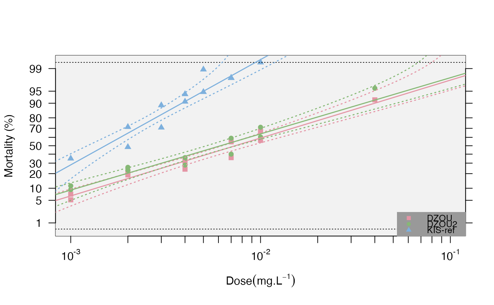

R/ratios.R
resist.ratio.RdUsing a generalised linear model (GLM, logit link function), this function computes the lethal doses for 25%, 50% and 95% (unless otherwise provided) of the population (LD25, LD50 and LD95, resp.), and their confidence intervals (LDmax and LDmin, 0.95 by default). See details for more info.
resist.ratio( data, conf.level = 0.95, LD.value = c(25, 50, 95), ref.strain = NULL, plot = FALSE, plot.conf = TRUE, test.validity = TRUE, ... )
| data | a data frame of probit-transformed mortality data using the function probit.trans() |
|---|---|
| conf.level | numerical. level for confidence intervals to be applied to the models (default 0.95) |
| LD.value | numerical. Level of lethal dose to be tested. default=c(25,50,95) |
| ref.strain | character. name of the reference strain if present (see details) |
| plot | logical. Whether to draw the plot. Default FALSE |
| plot.conf | logical. If plot=TRUE, whether to plot the 95 percent confidence intervals. Default TRUE |
| test.validity | logical. If plot=TRUE (default), the regression for a strain that failed the linearity test is not plotted |
| ... | parameters to be passed on to graphics for the plot (e.g. col, pch) |
Returns a data frame with the various estimates mentioned above. If plot=TRUE, plots the mortality on a probit-transformed scale against the log10 doses.
If a name is provided in ref.strain=, it will be used as the reference to compute the resistance ratios (RR). Alternatively, the function will look for a strain with the suffix "ref" in the dataset. If this returns NULL, the strain with the lowest LD50 will be considered as reference.
In addition to LD values, the function in a nutshell uses a script modified from Johnson et al (2013), which allows taking the g factor into account ("With almost all good sets of data, g will be substantially smaller than 1.0 and seldom greater than 0.4." Finney, 1971) and the heterogeneity (h) of the data (Finney, 1971) to calculate the confidence intervals (i.e. a larger heterogeneity will increase the confidence intervals). It also computes the corresponding resistance ratios (RR), i.e. the ratios between a given strain and the strain with the lower LD50 and LD95, respectively for RR50 and RR95 (usually, it is the susceptible reference strain), with their 95% confidence intervals (RRmin and RRmax), calculated according to Robertson and Preisler (1992). Finally, it also computes the coefficients (slope and intercept, with their standard error) of the linear regressions) and tests for the linearity of the dose-mortality response using a chi-square test (Chi(p)) between the observed dead numbers (data) and the dead numbers predicted by the regression (the test is significant if the data is not linear, e.g. mixed populations).
Finney DJ(1971). Probitanalysis. Cambridge:Cambridge UniversityPress. 350p.
HommelG(1988). A stage wise rejective multiple test procedure based on a modified Bonferroni test. Biometrika 75, 383-6.
Johnson RM, Dahlgren L, Siegfried BD,EllisMD(2013). Acaricide,fungicide and druginteractions in honeybees (Apis mellifera). PLoSONE8(1): e54092.
Robertson, J. L., and H.K. Preisler.1992. Pesticide bioassays with arthropods. CRC, Boca Raton, FL.
Pascal Milesi, Piyal Karunarathne, Pierrick Labbé
data(bioassay) transd<-probit.trans(bioassay$assay2) data<-transd$tr.data resist.ratio(data,plot=TRUE)#> LD25 LD25min LD25max LD25var LD50 LD50min LD50max LD50var LD95 #> DZOU 0.0030 0.0024 0.0037 1 0.0074 0.0061 0.0091 1 0.0645 #> DZOU2 0.0025 0.0018 0.0031 1 0.0062 0.0050 0.0077 1 0.0576 #> KIS-ref 0.0009 0.0006 0.0012 1 0.0015 0.0012 0.0018 1 0.0050 #> LD95min LD95max LD95var Slope SlopeSE Intercept InterceptSE h g #> DZOU 0.0410 0.1252 1.03 1.75 0.1537 3.72 0.3579 1.91 0.0397 #> DZOU2 0.0354 0.1214 1.02 1.69 0.1657 3.74 0.3907 2.33 0.0490 #> KIS-ref 0.0041 0.0067 1.00 3.17 0.3812 8.95 0.9849 3.26 0.0716 #> Chi(p) rr25 rr25max rr25min rr50 rr50max rr50min rr95 rr95max rr95min #> DZOU 0.3606 3.24 1931 0.0055 4.84 2877 0.0082 13 7990 0.0207 #> DZOU2 0.3568 2.64 1572 0.0044 4.05 2405 0.0068 11 7090 0.0186 #> KIS-ref 0.5715 1.00 597 0.0017 1.00 594 0.0017 1 596 0.0017